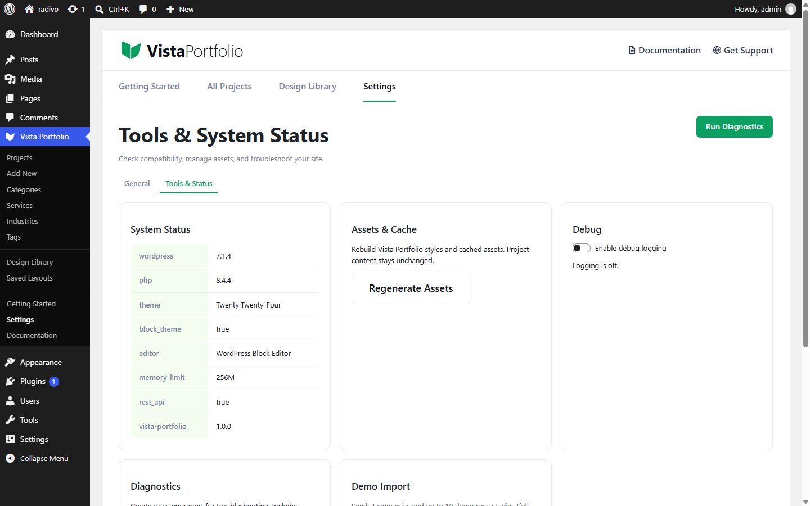

Import Demo Content
- Open Vista Portfolio → Settings → Tools & Status.
- Find Import Demo.
- Choose whether projects should be drafts, then run the import.

The importer seeds taxonomies and sample projects. Re-running is designed to be safe and avoid needless overwrites.